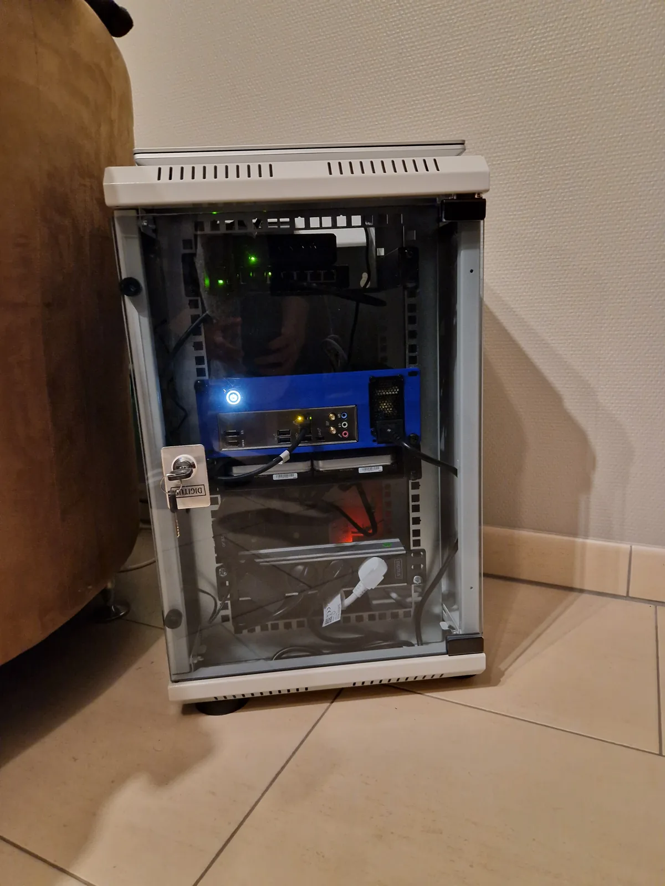

From Media Server to Personal Cloud
I started with media streaming and expanded the lab into a platform for my own applications, shared sign-in, AI workflows, and storage. I use it to test changes and solve problems that come up when you run your own services.

My Home Lab rack
Technical design goal
I designed this as a real-world learning environment, not a lab that only works on paper. The architecture separates public entry, compute and storage so I can experiment safely, keep services recoverable and work within the limits of quiet, low-power hardware at home.
What Runs On It
The main roles are edge traffic, shared application services, workers, and storage.
Cloud Gateway
- Caddy at the edge: Automatic TLS, strict security headers, structured logs, compression, and route-level rate limits.
- CrowdSec: Filters suspicious traffic at the edge.
- WireGuard: Used to protect traffic between infrastructure components.
- Administrative access: Management access is separate from application traffic.
- Security telemetry: Gateway logs and alerts inform monitoring and incident triage.
Application Platform
- Unified backend control plane: FastAPI + SQLAlchemy + Alembic + SQLite drive authentication, permissions, app registration, audit logs, AI orchestration, and cross-app state.
- Passwordless, federated login: I built an OIDC provider and an OAuth 2.0 consent flow. Users sign in with passkeys, and applications and AI assistants receive scoped tokens.
- Real-time and generative surfaces: self-hosted voice/video rooms (LiveKit/WebRTC) and an AI keyframe video generator that turns a start and end frame into a short clip - both behind the same SSO and edge security.
- Custom product suite: Identity portal, app hub, admin console, content digest, vault, term-mastery, task log, career workspace, voice/video rooms, an AI video generator, a mail studio, a music intake app, a knowledge base console, and a QR generator microservice.
- Central app controls: A shared application registry lets me disable access to individual apps.
- AI assistant bridge (MCP): AI clients connect through single sign-on and consent, the server mints a scoped token for them, and they get tools for tasks, research, calendars, mail and security briefs.
- Platform CLI: I built and packaged a Typer-based Python CLI for tasks, security operations, and health checks.
Agent + Worker Layer
- Research agent: Researches the web through a private meta-search backend and headless browsing, then returns structured briefs.
- Term-mastery agent: Generates summaries, flashcards, and remediation workflows for learning content.
- Security triage agent: Correlates edge alerts, access logs, sessions, and approval-gated write actions for admin review.
- Governance triage agent: watches internal session, permission, and account anomalies with a graded action policy - low-risk fixes auto-execute, high-blast-radius actions enter a human approval queue.
- Infrastructure monitoring agent: runs probes across nodes, containers, temperatures, and backup freshness, then an optional AI layer triages findings into a recovery-aware signal feed. A paired repair agent proposes a bounded fix and only applies it after my approval.
- Quality-check agent: verifies content summaries and crawls, spots login walls and empty captures, and tries one bounded rescue scrape before it refreshes the result.
- Drafting and CV agents: one writes replies to a conversation for mandatory human review and never sends anything itself. The other reviews a CV, tailors it to a job posting and returns edits that I accept or reject.
- Local AI: I use Ollama to run language models and generate embeddings. Local inference handles background and batch workloads. Hosted models handle latency-sensitive agent workflows.
- Decision engine: A lightweight model scores or classifies text and flags potential prompt injection for review.
- Agent memory and knowledge base: Combines full-text and vector search over curated notes, documentation, and transcripts, using local embeddings.
- Video to transcript: a worker turns a video link into a timestamped, chunked transcript that agents can read, using human-written subtitles first and Whisper as the fallback.
- Two run modes: Fixed pipelines handle predictable tasks, and adaptive model-driven workflows handle tasks that need more judgment.
- Shared guardrails: Every agent runs behind kill switches, token/cost/runtime budgets, tool allowlists, concurrency caps, and blocked-action logging.
K3s Cluster
- Traefik ingress: Host-based routing and a clean path to declarative microservice deployments.
- Portainer: Cluster visibility and day-to-day Kubernetes management.
- QR microservice: A React + Vite service running in K3s as the current reference workload for the cluster.
- Private multi-arch image flow: Images are prepared for ARM64 and x86_64 and distributed through a private registry workflow.
Storage + Media Plane (NAS)
- TrueNAS SCALE + ZFS: Separate storage node with mirrored HDD bulk storage, SSD hot tier, and service-specific datasets.
- ZFS memory tuning: I limited the filesystem cache to leave memory available for applications running alongside storage.
- Full self-hosted media: Jellyfin with hardware transcoding, fed by a Radarr/Sonarr/Jellyseerr/Bazarr/Jackett acquisition pipeline with ClamAV scanning; Immich for photos; Nextcloud for files; Navidrome + Lidarr + Soulseek for music; Forgejo for Git hosting.
- S3-compatible object storage: Dual MinIO tiers keep hot objects on SSD and move colder data to HDD through lifecycle rules.
- Versioned backups: A backup runner writes timestamped, checksummed archives, alongside ZFS snapshots.
- Game server plan: I planned a containerized game server with persistent world data.
- Power and cooling: I monitor power use and use drive temperatures to control airflow.
Why I Built It
I wanted a safe place to experiment. This was my first substantial personal project. I started with Jellyfin and grew the setup into a platform for services I could run and maintain myself.
Beyond learning, I kept running into the same frustration: existing tools were either limited, ad-ridden, or just didn't fit what I needed. The QR generator? Most online versions were locked behind paywalls or covered in ads. The Vault app? Nothing out there matched the workflow I had in mind. So instead of settling, I started building my own - and that grew into a full self-hosted ecosystem of custom applications replacing third-party tools on my own terms.
Working within limits on power, memory, and compute taught me to separate workloads and share sign-in between applications. I built custom apps and an agent framework to put those design decisions to work.
Lessons Learned
ARM has quirks
Not all Docker images support ARM64. Finding compatible alternatives and tweaking configs taught me to read docs carefully.
DNS is powerful
Managing records in Cloudflare and understanding how traffic flows made the whole system click.
Start small, iterate fast
This setup grew organically. Each problem solved unlocked the next improvement.
Cost-conscious infrastructure
Running on low-power devices and free-tier cloud taught me to optimize before scaling.
Security is a journey
Implementing SSO, token blacklisting, and audit logging taught me that authentication is more than just passwords.
Hybrid architecture complexity
Using Docker Compose and K3s together taught me to plan how workloads discover and reach each other.
Environment matters
Limited power, noise, and space shaped my hardware choices. I favored efficient components and measured how the system behaved under load.
Local AI has a hardware ceiling
I tested local models on a real research prompt. Responses took 4 to 20 minutes against a 10-second target. That led me to use local models for background tasks and hosted models when response time matters.
Works on Wi-Fi, fails on mobile
Every service timed out on roaming mobile data while Wi-Fi worked instantly. The cause was oversized TCP packets lost inside the carrier's tunnel. Capping the packet size at the edge fixed it, and the obvious suspect, HTTP/3, turned out to be a red herring.
Measure, then cool
Drive temperatures averaged 44 to 45 °C. I wrote a fan curve that follows the hottest drive and printed an exhaust shroud. Temperatures settled at 40 to 41 °C.